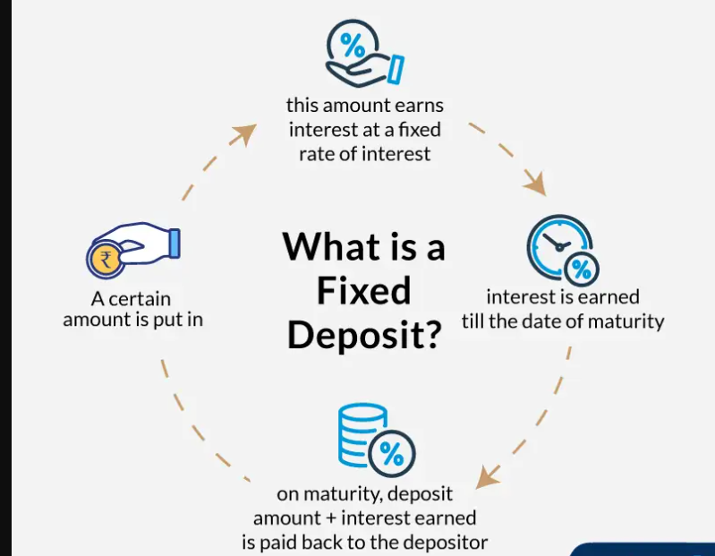
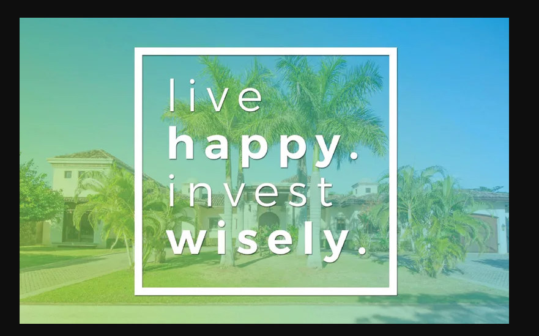

FIXED DEPOSIT ACCOUNTS
A fixed deposit is a financial instrument provided by banks which provides investors a higher rate of interest than a regular savings account, until the given maturity date
Example in Tanzania many banks offer fixed deposit accounts such as Stanbic ,CRDB and Standard Chartered.
REWARDS & RISKS OF INVESTING IN FIXED DEPOSIT ACCOUNTS
Advantages of Fixed Deposit Account
>Guaranteed Return: This is because there are very low risks compared to investing in stocks.
>Fixed-term:An FD plan has at least six months term.This means that your money will be safe and are able to get interest on it
>Apply for a loan:It is easy to raise a loan against your FD.One can borrow up to 90% of the FD's amount
Risks of Fixed Deposit Account
- Lower Returns compared to other investing options
- Penalty on withdrawal before the end of term of the account
- No-complete tax exemption
FINAL TWO CENTS
A. Write down what is your financial goal what you want that investment to fulfill for you.This will enable you to monitor the investment making sure the goal is achieved
B.Do your research what works best for you.Other things include the fees assosciated with the brokers and the taxes deducted by the government.
C.There are also investments in cryptocurrencies,gold,real estate donot be scared to learn about them
